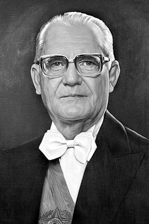

| Nome | Imagen | Início | Fim |
|---|---|---|---|
| Humberto de Alencar Castelo Branco | 15/04/1964 | 15/03/1967 | |
| Artur da Costa e Silva | 15/03/1967 | 31/08/1969 | |
| Emílio Garrastazu Médici | 30/10/1969 | 15/03/1974 | |
| Ernesto Geisel |  | 15/03/1974 | 15/03/1979 |
| João Baptista Figueiredo | 15/03/1979 | 15/03/1985 |
A ditadura militar brasileira foi um regime autoritário e nacionalista instaurado em 1 de abril de 1964, que perdurou até 15 de março de 1985, sendo conduzido por sucessivos governos militares. O regime teve início com o golpe de Estado de 1964, que depôs o governo João Goulart, eleito democraticamente. A ditadura terminou formalmente em 1985, quando José Sarney assumiu a presidência, marcando o início da chamada Nova República. Apesar da promessa inicial de uma intervenção breve, o regime se estendeu por 21 anos, consolidando-se por meio da promulgação de sucessivos Atos Institucionais, que ampliaram os poderes dos militares. O mais severo foi o Ato Institucional Número Cinco (AI-5), de 1968, que suprimiu direitos civis e fortaleceu a repressão política, permanecendo em vigor por dez anos. A Constituição de 1946 foir substituída pela Constituição de 1967, e o Congresso Nacional foi dissolvido. Além disso, a ditadura impôs um código de processo penal militar, permitindo que o Exército e a Polícia Militar encarcerassem suspeitos sem possibilidade de revisão judicial.